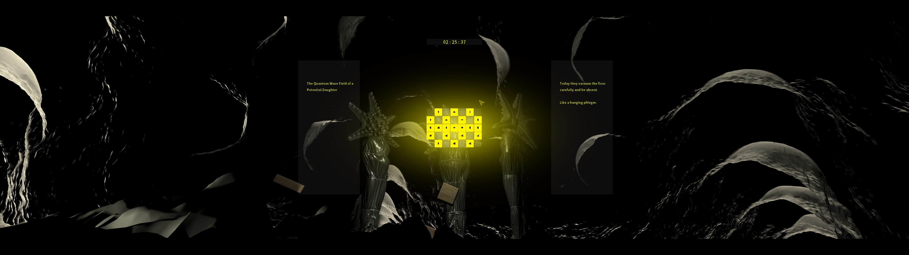
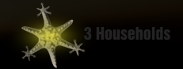
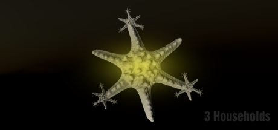
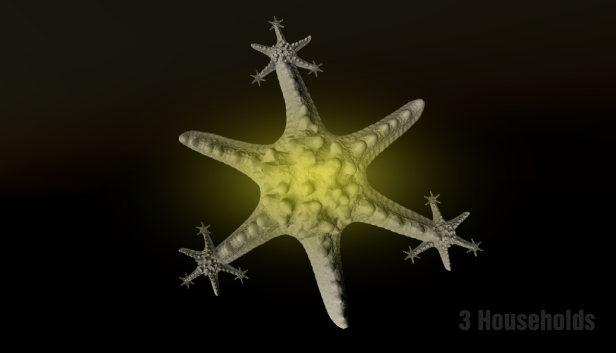
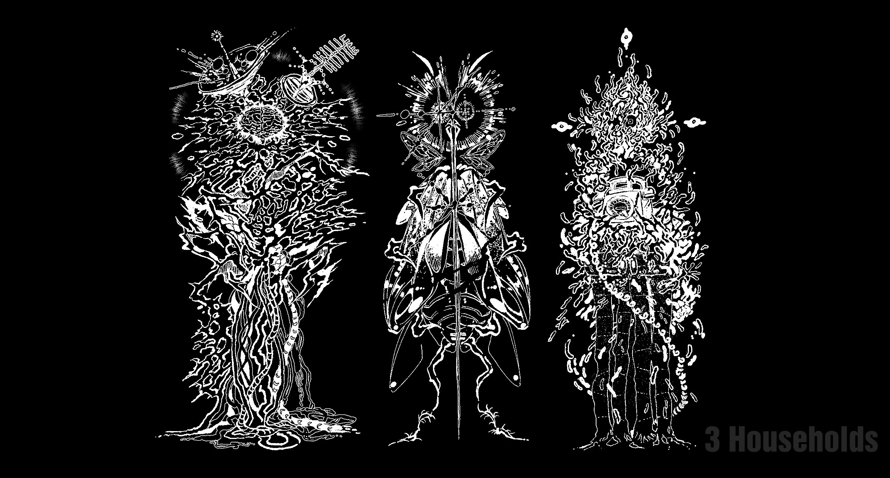
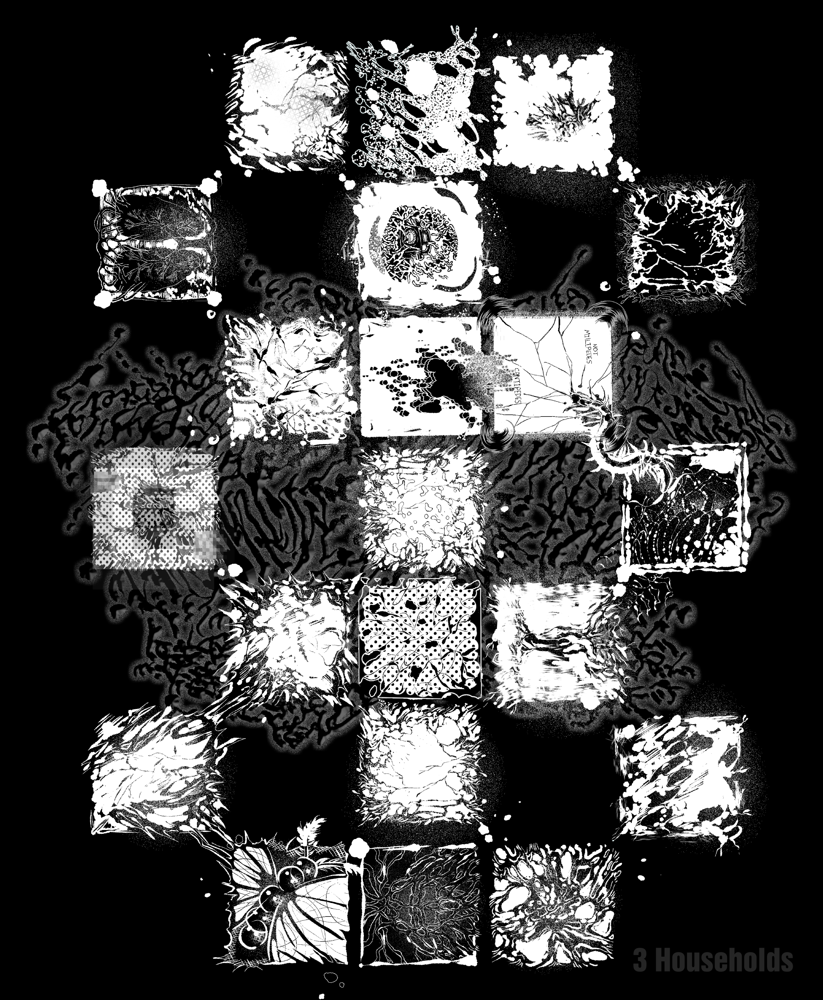

Energywhoisshe
Energy... Who is she
Energy... Who is she
Energy... Who is she
Energywhoisshe © 2022. All pictures cannot be copied without permission.
Energy... Who is she
Energy... Who is she
Energy... Who is she
Energywhoisshe © 2022. All pictures cannot be copied without permission.
2022년 12월 2일, PST 0:20 KST 17:20 경에 3 Households가 출시되었습니다.
다양한 컴퓨터 기종에 충분히 적용되었을 지, 개발자는 떨리는 마음입니다. 버그나 오탈자를 발견한다면 스팀 혹은 오피셜 SNS로 연락을 부탁드립니다. 감사합니다.
On December 2, 2022, around 0:20 PST 17:20 KST, 3 Households was released.
Whether it has been sufficiently applied to various computer models, the developer is trembling. If you find any bugs or typos, please contact us via Steam or official SNS. thank you.
Hosted by Cha Yeonså @energywhoisshe
Supported by 2022 Art Change Up x MCST x ARKO
#온라인미디어예술활동 #문화체육관광부 #한국문화예술위원회

Energywhoisshe 게임 스튜디오의 첫번째 프로젝트 출시 소식을 전합니다. 차연서가 개발하고 이상화가 작곡한 PC게임 #3Households 가 2022년 12월 2일 Steam에 발매됩니다.
2021년 프로토타입 당시 두 사람은 처음으로 개발자와 음악가로서 창작하고 협업하기 시작했습니다. 3 Households는 아트센터나비의 지원으로 태어나 조금씩 보완되며 부천아트벙커 및 This is not a church에 전시되었습니다. 비하인드 내러티브와 관련한 코딩 에세이를 웹진세미나에 게재했고 A Maze Berlin의 플레이 피드백을 거치기도 했습니다.
미술관과 전시장에서 태어났기 때문에 이 프로젝트는 단순한 방식으로 순환하고 반복되도록 기획되었습니다. 언어는 한국어/영어로 각기 다른 입구가 있습니다. 그리고 이번 소식을 함께 축하하기 위하여 … 젤리껌 일러스트레이션 & 인현진 디자인으로 진행한 특별한 티셔츠가 공개될 예정입니다. 당신의 약간의 흥분과 관심을 바랍니다.
We are happy to announce the release of Energywhoisshe's first game project.
#3Households , a PC game developed by Cha Yeonså and composed by Lee Sanghwa, will be released on Steam on 2 Dec, 2022. Its prototype in 2021 was Cha’s first game development and Lee’s first soundtrack composition. 3 Households was created with support of Art Center Navi (Seoul, KR) and gradually modified for the exhibitions at Bucheon Art Bunker (Bucheon, KR) and TINC (Seoul, KR). It gained feedback from the media festival A Maze Berlin. Also, a coding essay on the behind narrative of 3 Households was published on the webzine SEMINAR.
Born out of museums and exhibition halls, this project is designed to cycle and repeat in a simple way. It provides different entrances in Korean and in English. And to celebrate this news together... A special T-shirt with ggeomjelri’s illustration & In Hyunjin’s design will be released. We hope for your a bit of excitement and interest.
https://store.steampowered.com/app/2217540/3_Households/
3 Households on Steam
Release Date: 2 Dec, 2022
Developer: #Energywhoisshe
Publisher: #Energywhoisshe





 


{“The Mind of a Destructive Mother”, “The Quantum Wave Field of a Productive Daughter”, “The Physical Constitution of the Daughter’s Potential Girlfriend” };
#Simualtion #Puzzle #SinglePlayer
이 프로젝트는 프랙탈 가족 단위 또는 엄마, 딸, 그리고 딸의 여자 친구 사이의 회전하는 집 구조를 시뮬레이션합니다. 낮과 밤은 장례식 후 49일 동안 동거하면서 태어난 노란색입니다. 당신은 트라우마 변형 기술을 인용한 21개의 상자로 새로운 패턴을 돌봅니다. 기록을 둔감화하고 재처리하도록 허용하세요.
집을 지키는 사람들, 그리고 근본적으로 알람 시계 혹은 심볼 메이커로서 끝없는 시간.
Hosted by Cha Yeonså @energywhoisshe
Supported by 2022 Art Change Up x MCST x ARKO
#온라인미디어예술활동 #문화체육관광부 #한국문화예술위원회